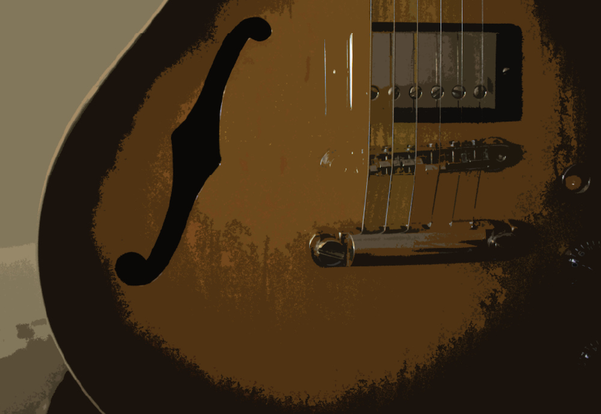

The best thing you can do while learning (or reviewing) music is to listen. Good listening skills are vital in developing your musicianship. As technology advances, the already vast amount of music available at the click of a finger is expanding exponentially. Up to the invention of recording, the only way to hear music was to attend a performance or to play it for yourself on an instrument. Physical copies of music were limited to published sheet music. Since then, recorded music has become more and more ubiquitous with each new technology: records, tapes, CDs, mp3s, streaming services, and whatever the next format happens to be. This easy access to such a vast amount of material has both positive and negative consequences. It is increasingly effortless to find recordings from nearly any conceivable artist, era, style, or geographic location. Great, but listeners eventually face information overload.
With so much music to choose from, where to begin? When teaching a new guitar student, one my first questions is always, “What is your favorite music?” This question is intentionally vague, allowing the student to respond with a musician, a band, or a style. A surprising pattern that I’ve noticed, especially in young beginners, is the alarming answer, “I don’t know. I don’t listen to music.” Many youngsters are not exposed to music at home. This answer says a lot about the way our society as a whole listens to music. This is the age of shuffle listening. The era of DJs and devices.
Music is a language. One of the best ways to quickly learn a language is through immersion learning. Think of music theory as the grammar of music and listening (and playing) as immersion. Imagine trying to learn Chinese strictly from a novel written in Chinese. It would be impossible to decipher pronunciation of the unfamiliar foreign characters. Learning from a book alone is not enough. On the other hand, if you moved to China, you would be forced to learn the basics of the language rather quickly in order to survive. You would hear others speak (listening), try to copy the sounds (playing), then later learn the correct grammar and sentence structure (theory). Notice: the first step in this process is listening.
Chinese characters for "music"
Most music we hear throughout the day is background music. Canned music is played in stores and restaurants. TV shows and movies use music behind dialogue and for transitions. We listen to music absent-mindedly while actively doing something else such as driving or cleaning. This consistent exposure to background music teaches passive listening. Your goal as a musician should be to listen actively and intentionally.
Regularly block out a pre-scheduled time to sit down and do nothing but listen to music. Remove all distractions. Turn off your computer and TV and put your phone in another room. If listening to music on an internet-connected device, put it in do not disturb mode to avoid distracting notifications, text messages, emails, etc.
A playlist might be great for background music at a party but listening to a full album is key to understanding a song’s greater function and context. Most artists craft albums of songs that fit together in a specific order. A good album, like a good book, has an overlying arch and storyline. After listening to an album in its entirety, research the history of the recording. Use the wealth of information on the internet for some good! Who are the musicians in the band? Who wrote the songs? When was it recorded? Where was it recorded? Who is the producer? What other recordings have the artists/musicians/producers made? Where does this recording fit in the artist’s catalog chronologically? Asking yourself these types of questions teaches you to more fully appreciate the context of your listening. What else could you ask?
It isn’t necessary to be a music-theory wizard or have perfect pitch to listen to music analytically. Whatever your level, find aspects of a recording to latch on to. This could be the harmony, the song form, or even the instrumentation. Try listening to a song on repeat. Let the music play and listen passively the first time through. On the second listen, identify specific aspects you hear. On the third listen, identify aspects that you aren’t sure about. This could be an unfamiliar chord progression or an irregular meter or phrase length. A beginner who doesn’t know what these fancy musical terms mean might be unsure of which instrument is playing a certain part. Listen repeatedly and try to decipher what you can at your current level. While you grow as a musician and listener, revisiting music will reveal new aspects that you could not hear before. Take solace in the fact that learning music is a truly endless pursuit. The depth of information is as deep as you choose to dive. It is easy for a beginner to feel overwhelmed at first. Don’t be afraid to start off in the shallow end. As your musicianship evolves, you will soon grow skilled and tall enough to reach the deep end. Later on, you will learn to dive deep into the murky depths of the endless sea of music.
Listen to music that you are not immediately drawn to. Listen to music that you don’t like. If the music doesn’t grow on you, try to find specific aspects of the music that you dislike. Aside from these unattractive elements, is there anything about the music that you find enjoyable? Perhaps a rap song has a fat bass line or a country player’s rhythm and timing is spot on. The more music you are exposed to (whether you like it or not), the more you can draw from those elements by embracing what you like and avoiding what you don’t. Not sure what to start with? Here is a short list of styles to draw from: classic rock, jazz, country, hip-hop/rap, R&B, classical, opera, bluegrass, Motown, EDM, reggae...the list goes on and on. When you connect with new styles, research their influences. Welcome the plummet into the rabbit hole head-first.
Discovering music that you’ve never heard is an exhilarating process. Each introductory listening experience has the potential to blow your mind. When seeking out new music, don’t forget about music that has stood the test of time. There is a reason why the classics are the classics. Whether the Beatles or Beethoven, Led Zeppelin or Liszt, Miles Davis or Metallica, listening to a classic for the first time has the same mind-blowing potential as new music. It is new to you, after all. Revisiting classics that you’ve heard many times will allow you to learn them more fully. You may even grow a deeper sense of appreciation for your favorite music.
There is something special about listening on vinyl. Physically hand-selecting an album from the shelf, taking the record out of its sleeve, carefully placing it on the record player, lining up the needle, listening to a side at a time, and flipping the record to repeat the process for side two. At times it feels almost ceremonial. As an added benefit, the analog sound is pleasing to ears accustomed to digital formats. The process of building a record collection is also a very different experience than our current reality of immediate access to any music at any time. A small record collection is the antithesis to information overload. With fewer choices, you will have the opportunity to learn each album more fully. Curate a collection of some of your favorite music. Listening to music that you know well on vinyl is an especially gratifying experience. Make a list of your all-time favorite recordings and plan to eventually buy them on vinyl. Brand new pressings of music new and old are becoming more accessible, and you may discover dirt cheap finds at secondhand music stores, book stores, thrift shops, garage sales, etc. Even if you aren’t ready to take the vinyl plunge now, consider doing so someday. And whatever you do—go listen to some music.
